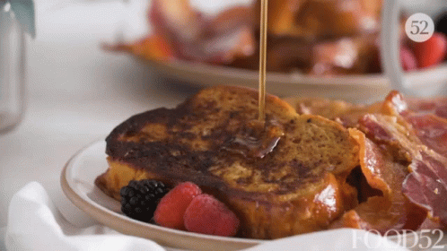

Grandma's Famous french toast recipe

A recipie that is guaranteed to knock your socks off. This recipie was thought up when grandma had a stroke and passed out on the floor.
she only came to when I dipped my balls in maple syrup and swung them over her face like a bell. When she awoke, she immediately went in the kitchen
and created this masterpiece.
Ingredients
- 1 tsp Ground cinnamon
- 1/4 tsp Ground nutmeg
- 2 Tbs Sugar
- 4 Tbs Butter
- 4 Eggs
- 1/4 C Milk
- 1/2 tsp Vanilla extract
- 8 Slices of Challah, Brioche, or White bread
- 1/2 C Maple syrup, warmed
Instructions
- In a small bowl, combine cinnamon, nutmeg, and sugar and set aside briefly.
- In a 10-inch or 12-inch skillet, melt butter over medium heat. Whisk together cinnamon mixture, eggs, milk, and vanilla and pour into a shallow container such
as a pie plate. Dip bread in egg mixture. Fry slices until golden brown, then flip to cook the other side. Serve with syrup.